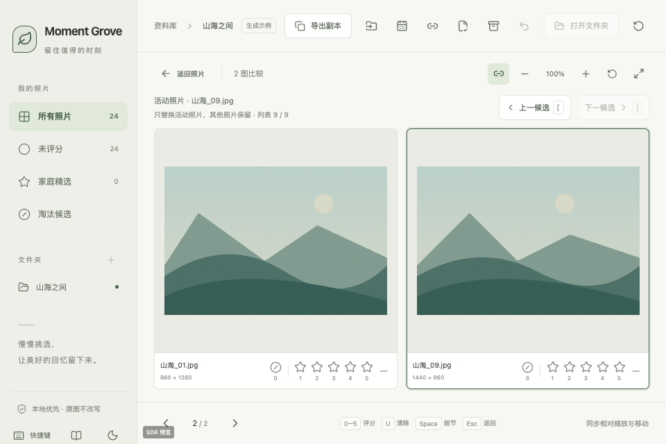

挑选有自己的节奏
0–5 评分，U 清除，撤销随时可用。未评分与淘汰候选清晰区分。
A LITTLE SPACE FOR YOUR MEMORIES
一场旅行，一次相聚，或平常的一天。
从许多照片里，慢慢挑出值得留下的瞬间。
Apple Silicon · 中文界面 · 开源 · 无需账号
LESS FRICTION. MORE FEELING.
浏览、评分、比较，在一个安静的工作区里完成。
退出之后，也能接着上次的位置继续。

0–5 评分，U 清除，撤销随时可用。未评分与淘汰候选清晰区分。
2–8 张比较，只替换活动候选。用 [ / ] 接着挑，其他照片保持可见。
按精选导出原格式副本，或生成日期与手动城市水印 JPEG。水印外观可记住，城市和备用日期每批填写。
A SMALL TASTE OF THE RHYTHM
在这段网页演示中点选评分。
桌面 App 还支持键盘快捷键与持续审片。
仅使用生成插画，不读取你的照片。
FROM A FOLDER, TO YOUR FAVOURITES
无需导入封闭图库，也不用改变你原来的存放方式。
选择普通文件夹，渐进浏览支持的静态照片。视频等未载入文件会有数量说明。
用评分与比较缩小范围。正常退出会等待评分和审片位置保存，下次接着挑。
导出 4–5 星精选，或制作日期城市水印。每批最多 100 张，结果逐项核验。
评分先保存在本机；XMP 同步与文件移动都需要明确操作。提供资料库快照、文件操作记录和核对撤回。快照不包含照片，请另备份媒体文件。
A LITTLE SPACE, ON YOUR MAC
Moment Grove 0.5.2
macOS Apple Silicon · 技术测试预发布
A FEW THINGS TO KNOW
App 在本机处理照片与评分，无需账号或云服务。手动城市不会触发在线定位。官网也不读取本地照片，不加载第三方统计。
不会。0 只表示淘汰候选，与未评分不同。文件整理需要你单独核对范围和确认，评分本身不触发删除或移动。
复制导出保留原文件字节及原有元数据，并附上当前评分 XMP。水印导出生成独立 sRGB JPEG 和评分 XMP，不携带源 EXIF/GPS；不改变原件。
前往 GitHub Issues，说明版本、macOS 版本和复现步骤。请勿公开上传私人照片、位置、图库数据库或操作日志。